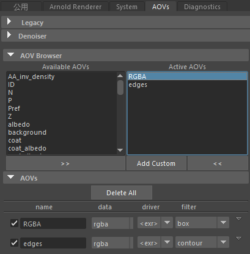

| 延伸阅读 |
|---|
| 有关完整的着色器文档，请参见《Arnold 用户手册》中的卡通。 |
卡通着色器是随 contour_filter 一起提供的一个非真实照片级渲染 (NPR) 解决方案的一部分。
要下载 Sophie 资源的卡通示例场景文件，请单击此处。

RGBA (box_filter) 和边自定义 AOV (contour_filter)
base_tonemap 的使用示例
渐变 -> specular_tonemap
用于“风格化高光”(Stylized Highlight)的多个（蓝色和红色）灯光 -“directionalLightShape1;directionalLightShape2”。
用于 rim_lighting 的_带方向性的_灯光